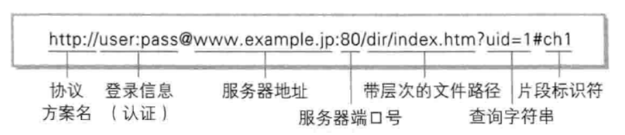

从浏览器地址栏输入url到显示页面的步骤
1、 在浏览器地址栏输入URLURL(Uniform Resoure Locator)：统一资源定位符
它通常由如下部分组成：协议、域名、端口号（默认为80，可不写）、文件路径等

2、浏览器查看缓存，如果请求资源在缓存中并且新鲜，跳转到转码步骤
- 如果资源未缓存，发起新请求
- 如果已缓存，检验是否足够新鲜，足够新鲜直接提供给客户端，否则与服务器进行验证。
- 检验新鲜通常有两个HTTP头进行控制Expires和Cache-Control：
- HTTP1.0提供Expires，值为一个绝对时间表示缓存新鲜日期
- HTTP1.1增加了Cache-Control: max-age=,值为以秒为单位的最大新鲜时间
3、域名解析
- 浏览器缓存 – 浏览器会缓存DNS记录一段时间
- 系统缓存 - 从 Hosts 文件查找是否有该域名和对应 IP。
- 路由器缓存 – 一般路由器也会缓存域名信息。
- ISP DNS 缓存 – 比如到电信的 DNS 上查找缓存。
- 如果都没有找到，则向根域名服务器查找域名对应 IP，根域名服务器把请求转发到下一级，直到找到 IP。
4、涉及到TCP/IP协议(后续补上)
5、服务器处理请求(这里会涉及到MVC框架，先留个坑，后续补上)
常见的Web服务器有Apache、Nginx、lls、Lighttpd、Node等，服务器把响应的内容发回给浏览器。
6、浏览器解析服务器发回的内容，具体为构件DOM树，下载资源，构造CSSOM树，执行js脚本。
7、构建DOM树：
- Tokenizing：根据HTML规范将字符流解析为标记
- Lexing：词法分析将标记转换为对象并定义属性和规则
- DOM construction：根据HTML标记关系将对象组成DOM树
解析过程中遇到图片、样式表、js文件，启动下载
8、构建CSSOM树：
- Tokenizing：字符流转换为标记流
- Node：根据标记创建节点
- CSSOM：节点创建CSSOM树
9、根据DOM树和CSSOM树构建渲染树:
- 从DOM树的根节点遍历所有可见节点，不可见节点包括：1）
script,meta这样本身不可见的标签。2)被css隐藏的节点，如display: none - 对每一个可见节点，找到恰当的CSSOM规则并应用
- 发布可视节点的内容和计算样式
10、js解析如下：
- 浏览器创建
Document对象并解析HTML，将解析到的元素和文本节点添加到文档中，此时document.readystate为loading - HTML解析器遇到没有
async和defer的script时，将他们添加到文档中，然后执行行内或外部脚本。这些脚本会同步执行，并且在脚本下载和执行时解析器会暂停。这样就可以用document.write()把文本插入到输入流中。同步脚本经常简单定义函数和注册事件处理程序，他们可以遍历和操作script和他们之前的文档内容 - 当解析器遇到设置了
async（异步）属性的script时，开始下载脚本并继续解析文档。脚本会在它下载完成后尽快执行，但是解析器不会停下来等它下载。异步脚本禁止使用document.write()，它们可以访问自己script和之前的文档元素 - 当文档完成解析，
document.readState变成interactive - 在
<script>元素中设置defer属性即解析后续文档元素的过程将和<script>的下载同时执行，但是<script>的执行要在所有元素解析完成后才会执行，禁止使用document.write() - 浏览器在
Document对象上触发DOMContentLoaded事件 - 此时文档完全解析完成，浏览器可能还在等待如图片等内容加载，等这些内容完成载入并且所有异步脚本完成载入和执行，
document.readState变为complete,window触发load事件